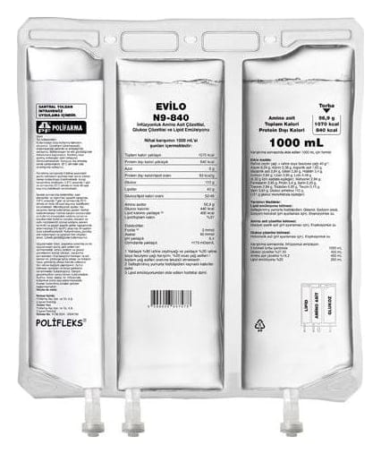

Evilo N9-840 İnfüzyonluk Amino Asit Çözeltisi, Glukoz Çözeltisi ve Lipid Emülsiyonu, 2000 ML

Ne için kullanılır
KT · Bölüm 1EVİLO N9-840, damar içine uygulanan bir emülsiyondur. Üç bölmeli bir torba içinde sunulmaktadır. Bölmelerden birinde lipid (yağ) emülsiyonu, ikincisinde amino asit çözeltisi ve üçüncüsünde glukoz çözeltisi bulunur. Bu bölmeler, geçici seperatörler ile ayrılmıştır. Amino asit ve glukoz çözeltileri içeren bölmeler karışım gerçekleştirilmeden önce berrak ve renksiz ya da hafifçe sarı görünümlü; yağ emülsiyonu içeren bölümse homojen süt görünümlüdür. Kullanmadan önce torba üst bölümünden başlanarak kendi üzerine katlanır ve bölmeler arasındaki geçici separatörler açılarak üç bölme içeriğinin karışması sağlanır. Karışım gerçekleştikten sonra torbanın tümü homojen süt görünümlü olur. Havada bulunan oksijenle teması önlemek için üç bölmeli torba, oksijen geçirmeyen bir dış torbayla kaplıdır. Dış torba ile iç torba arasında oksijeni soğuran bir saşe bulunmaktadır. Torbaların 1000 ml, 1500 ml ve 2000 ml’lik üç formu bulunmaktadır. EVİLO N9-840, ağızdan veya enteral (besinlerin ağızdan veya tüple sindirim sistemine verilmesi) beslenmenin uygun olmadığı durumlarda, yetişkinlere ve 2 yaşından büyük çocuklara bir tüp yoluyla damar içine beslenme sağlamak için kullanılmaktadır.
Karışımın beslenme içeriği aşağıdaki şekildedir:
1000 mL 1500 mL 2000 mL Lipidler 40 g 60 g 80 g Amino asitler 56,9 g 85,4 g 113,9 g Azot 9,0 g 13,5 g 18,0 g Glukoz 110,0 g 165,0 g 220,0 g Enerji: Yaklaşık toplam kalori Protein dışı kaloriler Glukoz kalorileri Lipid kalorileri a
Protein dışı kaloriler/ azot oranı Glukoz / lipid kalorileri oranı Lipid / toplam kaloriler
1070 kcal 840 kcal 440 kcal 400 kcal
93 kcal/g 52/48 %37
1600 kcal 1260 kcal 660 kcal 600 kcal
93 kcal/g 52/48 %37
2140 kcal 1680 kcal 880 kcal 800 kcal
93 kcal/g 52/48 %37 Elektrolitler: Fosfat b
Asetat
3.0 mmol 40 mmol
4.5 mmol 60 mmol
6.0 mmol 80 mmol pH 6,4 6,4 6,4 Ozmolarite 1170 mosm/L 1170 mosm/L 1170 mosm/L a Saflaştırılmış yumurta fosfolipidleri kalorileri dahil b Lipid emülsiyonundaki fosfatlar dahil
EVİLO N9-840, yalnızca toplardamar içine bu amaca uygun bir plastik boru (set) aracılığıyla ve tıbbi gözetim altında kullanılır.